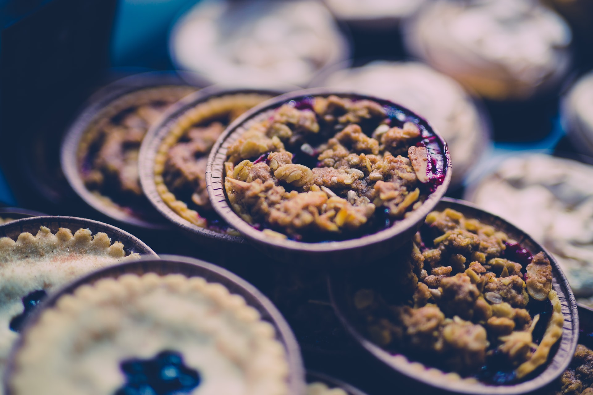

For too long, gluten-free baking has been lacking in flavor, fiber and nutrition as most recipes are dependent upon gums, starches and refined flours. This method of baking, in contrast, uses presoaked whole grains and is a wonderful alternative as it produced baked goods that have great texture, flavor and nutritional quality. It is also much less costly to prepare than gluten-free mixes and traditional gluten-free recipes. This has the added bonus of making wholesome gluten-free recipes affordable and appealing to the whole family. (No more making the gluten-intolerant family member eat differently from the rest!).
I usually refer to these recipes as “blender recipes” because the whole grains are soaked for a period of time to allow for the breakdown of enzyme inhibitors and to increase nutritional value, and then are processed in a blender for use in a pancake, muffin, cake or cookie recipe.
The texture of baked goods made from blended soaked grains is superior to those made with gluten-free flours and is much more similar to that of the white flour products we’re accustomed to. They are more nutritious and economical too! Gluten-free “blender” recipes are some of my favorites and definitely worth the extra effort expended to set some grains to soak in advance of baking time.
So here’s a basic blender recipe for-
Gluten-free Flour-free Banana-Blueberry Muffins
1 1/3 cups brown rice
1/2 cup whole millet
1/3 cup raw buckwheat
1 Tbsp. apple cider vinegar
_________________
1 1/4 cups water
2-3 ripe bananas
2 cups blueberry
2 Tbsp. oil/butter
3+ Tbsp. honey*
1 tsp. apple cider vinegar
1/4 cup ground flax
1 tsp. cinnamon
¼ tsp. nutmeg
3/4 tsp. sea salt
___________________
2 tsp. baking powder
½ tsp. baking soda
Soak grains overnight (or for at least 8 hours) in plenty of water plus the 1 Tbsp. vinegar. Drain and then add to blender with the ingredients in the right column. When batter is quite smooth, gently blend in baking powder and soda (sift through a sieve and whisk in to avoid lumps). Pour into oiled muffin cups. Bake at 400 degrees for about 20 minutes. Makes about 1 1/2 dozen muffins.
* or agave or maple syrup
Option: add 1 cup of raisins to muffin batter before baking.
Be sure to oil your muffin cups well so they release easily. I prefer using a baking stone (muffin top style) as the clean-up is simplified.
These muffins keep well and freeze great!

Categories: Health